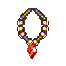
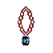

| Picture | Name | Description | What it does | Where it's from |
 |
Lich Ammy 1 | A large tin amulet with a glass jewel | Gains Entrance to Lich 2 | Lich 1 |
 |
Lich Ammy 2 | A large tin amulet with a glass jewel | Gains Entrance to Lich 3 | Lich 2 |
 |
Lich Ammy 3 | A large bronze amulet with a quartz jewel | Gains Entrance to Lich 4 | Lich 3 |
 |
Lich Ammy 4 | A bronze amulet with a diamond jewel | Gains Entrance to Lich 5 | Lich 4 |
 |
Lich Ammy 5 | Silver Amulet with a diamond jewel | Gains Entrance to Lich 6 | Lich 5 |
 |
Lich Ammy 6 | A gold amulet with a sapphire jewel | Gains Entrance to Papa lich | Lich 6 |
 |
Enmiss prot ammy | Glowing silver chained pendant with small diamonds interspersed around the chain | Enmiss Prot 50 | Found Randomly Appraises for 3000 |
|
Lightning prot ammy | Glowing silver chained pendant with small diamonds interspersed around the chain | Lightning Prot 30 | Found Randomly Appraises for 2000 |
|
Acid prot ammy | Glowing silver chained pendant with small diamonds interspersed around the chain | Acid Prot 100 | From Black Dragon Appraises for 100 |
|
Muzi | Glowing silver chained pendant with pearls interspersed on a silver string | +2 Ep regain | Trade 2 silver bows and a door pearl in km-2 |
 |
Uzi |
A large glowing necklace with a single glowing diamond
(Level 14 req) |
+5 Ep regain | Kill and search Papalich |
|
Uzi | A large glowing necklace with a single glowing diamond
(Level 14 req) (Untied) |
+5 Ep regain | Found on Chipper (Untied) |
 |
Charisma Amulet | A hand crafted necklace made of small beads | +2 to +3 Charisma (depending from which year you got it) | From Thanksgiving event |
|
Hp Amulet | A hand crafted necklace made of small beads | +25 hp | Quest in alt 2 |
 |
Fire prot amulet | Small golden necklace with a finely polished red ruby | Fire Prot 25 | Red dragons in Nork lairs. |
|
Fire prot amulet | Small golden necklace with a finely polished red ruby | Fire Prot 50 | Rd's in Fireplains |
|
Firestorm prot amulet | Small golden necklace with a finely polished red ruby | Firestorm Prot 50 | Fs Rd in n-6. |
|
Spots fs prot amulet | Small golden necklace with a finely polished red ruby | Firestorm Prot 100 | Found on Spot. |
|
Ec ammy | Small golden necklace with a finely polished red ruby | ec prot | From stunny, the n-7 dragon who no longer exists |
 |
Plain gold amulet | Beautifully worked golden amulet with a jewelers mark etched into the reverse | Nothing | Goblin Lord quest item |
|
Plain gold amulet | Small golden necklace. | Nothing | Random find |
|
Fire prot amulet | Small golden necklace. | On-contact level 22 protfire | Maeling -4 |
|
Volton amulet | Small golden necklace with a faint amber glow, the item is of good alignment. | 3/3 | Kill Volton |
|
Plain gold amulet | Golden amulet with the shape of a heavy helm inlaid in the center | Charges of protstun | Trade Mummy King cloak and 3k to Wartberg. |
|
Stunrah Amulet | Small golden necklace with a faint amber glow, the item is of good alignment. | 2/2 | Kill Stunrah |
 |
Durgon Amulet | An amulet made from a crystalline stone | +2 ep regen | Kill Durgon |